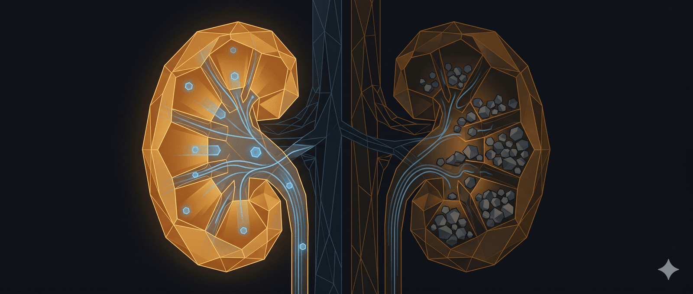

CẦM DAO MỔ RỒI MỚI THẤY, NHIỀU QUẢ THẬN “RA ĐI” OAN UỔNG CHỈ VÌ THIẾU HIỂU BIẾT!Làm nghề Phẫu thuật Thận Tiết niệu - Nam học bao năm, chứng kiến không biết bao nhiêu ca “thập tử nhất sinh”, những quả thận ứ mủ như “sữa ông thọ”, hay những ca suy thận mạn khi tuổi còn rất trẻ… Tôi đúc rút ra những điều CƠ BẢN – QUAN TRỌNG – SỐNG CÒN dưới đây.
Mong mọi người lưu lại để bảo vệ hệ tiết niệu của mình và gia đình:
Phòng sỏi thận bằng nước và theo dõi nước tiểu
𝟏. 𝐍𝐮̛𝐨̛́𝐜 𝐥𝐚̀ 𝐯𝐮𝐚: Không có thuốc nào tốt bằng nước. Uống đủ 2-2,5 lít nước mỗi ngày (khuyến cáo là 0,4 lít nước / 10 Kg thể trạng cơ thể) là cách rẻ nhất, tốt nhất để phòng sỏi thận.
𝟐. 𝐌𝐚̀𝐮 𝐧𝐮̛𝐨̛́𝐜 𝐭𝐢𝐞̂̉𝐮: Hãy nhìn nước tiểu của mình. Nếu nó trong hoặc vàng nhạt là bình thường. Nếu vàng sậm, bạn đang thiếu nước trầm trọng. Nếu tiểu máu, tiểu mủ thì cần tới viện ngay.
Dấu hiệu nguy hiểm cần đi cấp cứu ngay
𝟑. 𝐒𝐨̉𝐢 ”𝐢𝐦 𝐥𝐚̣̆𝐧𝐠” 𝐥𝐚̀ 𝐬𝐨̉𝐢 𝐧𝐠𝐮𝐲 𝐡𝐢𝐞̂̉𝐦 𝐧𝐡𝐚̂́𝐭: Đừng nghĩ không đau là không sao. Những viên sỏi to lấp kín đài bể thận hoặc những viên sỏi hình thành tại niệu quản (sỏi không triệu chứng) thường không gây đau dữ dội, nhưng nó âm thầm làm mất chức năng thận. Khi phát hiện thì thận đã hỏng.
𝟒. 𝐓𝐡𝐮𝐨̂́𝐜 𝐍𝐚𝐦 𝐤𝐡𝐨̂𝐧𝐠 𝐥𝐚̀𝐦 𝐭𝐚𝐧 𝐬𝐨̉𝐢 đ𝐚̃ “𝐡𝐨́𝐚 đ𝐚́”: Sỏi to, cứng, sỏi san hô… uống thuốc lá, thuốc nam không thể tan, mà còn làm trì hoãn thời gian vàng điều trị, dẫn đến suy thận, hẹp niệu quản.
𝟓. 𝐂𝐨̛𝐧 đ𝐚𝐮 𝐪𝐮𝐚̣̆𝐧 𝐭𝐡𝐚̣̂𝐧: Đau dữ dội vùng thắt lưng lan xuống bẹn/bìu, không tư thế nào giảm đau → Đi cấp cứu ngay.
𝟔. 𝐒𝐨̂́𝐭 + Đ𝐚𝐮 𝐭𝐡𝐚̆́𝐭 𝐥𝐮̛𝐧𝐠 = 𝐁𝐀́𝐎 Đ𝐎̣̂𝐍𝐆 Đ𝐎̉: Dấu hiệu của ứ mủ thận hoặc sốc nhiễm khuẩn. Chậm trễ có thể nguy hiểm tính mạng.
Điều trị, tái khám và công nghệ hiện đại
𝟕. 𝐒𝐨̉𝐢 𝐭𝐢𝐞̂́𝐭 𝐧𝐢𝐞̣̂𝐮 𝐫𝐚̂́𝐭 𝐡𝐚𝐲 𝐭𝐚́𝐢 𝐩𝐡𝐚́𝐭: Đã mổ sỏi/tán sỏi một lần thì nguy cơ bị lại rất cao (50% sau 5 năm). Vì thế, tái khám định kỳ mỗi 3-6 tháng là bắt buộc.
𝟖. 𝐌𝐨̂̉ 𝐦𝐨̛̉ đ𝐚̃ 𝐥𝐚̀ 𝐝𝐢̃ 𝐯𝐚̃𝐧𝐠 (𝐭𝐫𝐨𝐧𝐠 đ𝐚 𝐬𝐨̂́ 𝐭𝐫𝐮̛𝐨̛̀𝐧𝐠 𝐡𝐨̛̣𝐩): Y học hiện đại ưu tiên tán sỏi qua da đường hầm nhỏ (Mini-PCNL), tán sỏi ngược dòng ống mềm… Ít đau, thẩm mỹ, ra viện sớm. Đừng quá sợ “dao kéo”.
𝟗. 𝐒𝐨̉𝐢 𝐧𝐢𝐞̣̂𝐮 𝐪𝐮𝐚̉𝐧 𝐧𝐡𝐨̉ (<𝟓𝐦𝐦): Có thể tự ra được nếu uống nhiều nước và dùng thuốc giãn cơ hỗ trợ (theo chỉ định bác sĩ). Đừng vội mổ nếu chưa cần thiết.
𝟏𝟎. 𝐓𝐡𝐚̣̂𝐧 𝐮̛́ 𝐧𝐮̛𝐨̛́𝐜: Là hậu quả, không phải tên bệnh. Phải tìm ra nguyên nhân gây ứ nước (do sỏi, do hẹp, do u…) để giải quyết tắc nghẽn.
𝟏𝟏. 𝐌𝐮̀𝐚 𝐡𝐞̀ 𝐥𝐚̀ 𝐦𝐮̀𝐚 𝐬𝐨̉𝐢: Mồ hôi ra nhiều → Nước tiểu cô đặc → Dễ tạo sỏi. Mùa này cần uống nước gấp đôi bình thường.
𝟏𝟐. 𝐒𝐢𝐞̂𝐮 𝐚̂𝐦 – 𝐑𝐞̉ 𝐦𝐚̀ “𝐜𝐨́ 𝐯𝐨̃”: Chỉ cần một lần siêu âm ổ bụng (chi phí rất thấp) là đã phát hiện được sỏi, u, dị dạng đường tiết niệu. Đừng tiếc tiền đi khám.
Vấn đề tiết niệu theo giới tính và độ tuổi
𝟏𝟑. 𝐓𝐢𝐞̂̉𝐮 𝐛𝐮𝐨̂́𝐭 𝐬𝐚𝐮 “𝐲𝐞̂𝐮”: Chị em phụ nữ rất dễ bị viêm bàng quang sau khi quan hệ. Nhớ đi tiểu và vệ sinh sạch sẽ ngay sau khi sinh hoạt vợ chồng.
𝟏𝟒. Đ𝐮̛̀𝐧𝐠 𝐧𝐡𝐢̣𝐧 𝐭𝐢𝐞̂̉𝐮: Nước tiểu ứ đọng lâu trong bàng quang là môi trường lý tưởng để vi khuẩn phát triển và cặn lắng tạo sỏi. Nhịn tiểu quá mức là không tốt, còn các bạn bị OAB thì lại cần tập tiểu, huấn luyện bàng quang.
𝟏𝟓. Đ𝐚̀𝐧 𝐨̂𝐧𝐠 𝐭𝐫𝐞̂𝐧 𝟓𝟎 𝐭𝐮𝐨̂̉𝐢: Chú ý tuyến tiền liệt. Nếu thấy tiểu khó, tiểu đêm nhiều lần, tia nước tiểu yếu → Cần đi khám U xơ tiền liệt tuyến, nhớ kiểm tra PSA nhé.
𝟏𝟔. Đ𝐚𝐮 𝐭𝐢𝐧𝐡 𝐡𝐨𝐚̀𝐧 𝐨̛̉ 𝐭𝐫𝐞̉ 𝐧𝐚𝐦/𝐭𝐡𝐚𝐧𝐡 𝐧𝐢𝐞̂𝐧: Nếu đau đột ngột dữ dội, phải nghĩ ngay đến XOẮN TINH HOÀN. Thời gian vàng cứu tinh hoàn chỉ có 6 giờ. Đừng ngại, đừng chủ quan, đi viện ngay!
Chế độ ăn uống ảnh hưởng đến sỏi thận
𝟏𝟕. 𝐍𝐮̛𝐨̛́𝐜 𝐜𝐚𝐦, 𝐧𝐮̛𝐨̛́𝐜 𝐜𝐡𝐚𝐧𝐡: Rất tốt cho người bị sỏi (đặc biệt sỏi canxi oxalat) nhờ chứa Citrate giúp chống tạo sỏi.
𝟏𝟖. 𝐕𝐢𝐭𝐚𝐦𝐢𝐧 𝐂: Tốt nhưng không lạm dụng. Uống quá nhiều C liều cao (>1000mg/ngày) kéo dài làm tăng nguy cơ sỏi thận.
𝟏𝟗. 𝐌𝐮𝐨̂́𝐢 𝐥𝐚̀ 𝐤𝐞̉ 𝐭𝐡𝐮̀: Ăn mặn hại thận khủng khiếp. Giảm mặn là giảm gánh nặng cho thận và giảm nguy cơ sỏi.
𝟐𝟎. 𝐇𝐞̣𝐩 𝐛𝐚𝐨 𝐪𝐮𝐲 đ𝐚̂̀𝐮 𝐨̛̉ 𝐭𝐫𝐞̉: Không nên vội vàng nong/cắt quá sớm nếu không có chỉ định. Nhưng cần vệ sinh sạch sẽ để tránh viêm nhiễm ngược dòng.
𝟐𝟏. 𝐓𝐢𝐞̂̉𝐮 𝐦𝐚́𝐮 (𝐧𝐮̛𝐨̛́𝐜 𝐭𝐢𝐞̂̉𝐮 đ𝐨̉): Không bao giờ là bình thường. Có thể là sỏi di chuyển, viêm, nhưng cũng có thể là dấu hiệu của U bàng quang/U thận. Phải đi tìm nguyên nhân ngay.
𝟐𝟐. 𝐆𝐢𝐚̉𝐦 đ𝐚̣𝐦 đ𝐨̣̂𝐧𝐠 𝐯𝐚̣̂𝐭: Ăn quá nhiều thịt đỏ làm tăng Axit Uric và giảm pH nước tiểu → Dễ sinh sỏi.
Thói quen sinh hoạt và lầm tưởng dân gian
𝟐𝟑. 𝐓𝐮̛ 𝐭𝐡𝐞̂́ 𝐧𝐠𝐮̉: Không ảnh hưởng nhiều đến sỏi thận như lời đồn. Quan trọng là vận động. Người nằm bất động lâu ngày dễ bị sỏi hơn người hay vận động.
𝟐𝟒. 𝐔𝐨̂́𝐧𝐠 𝐧𝐮̛𝐨̛́𝐜 𝐭𝐫𝐮̛𝐨̛́𝐜 𝐤𝐡𝐢 𝐧𝐠𝐮̉: Tốt, nhưng vừa phải để tránh mất ngủ vì tiểu đêm. Nên uống rải rác trong ngày. Quan trọng nhất là ly nước ngay sau khi ngủ dậy.
𝟐𝟓. 𝐓𝐡𝐮̛̣𝐜 𝐩𝐡𝐚̂̉𝐦 𝐜𝐡𝐮̛́𝐜 𝐧𝐚̆𝐧𝐠: Chỉ là hỗ trợ. Không thay thế được phác đồ điều trị của bác sĩ.
𝟐𝟔. 𝐏𝐡𝐮̣ 𝐧𝐮̛̃ 𝐦𝐚𝐧𝐠 𝐭𝐡𝐚𝐢: Nếu đau lưng dữ dội, coi chừng sỏi thận gây cơn đau quặn thận. Việc điều trị cần hết sức thận trọng để an toàn cho cả mẹ và con.
𝟐𝟕. Đ𝐮̛̀𝐧𝐠 𝐤𝐢𝐞̂𝐧𝐠 𝐂𝐚𝐧𝐱𝐢: Đây là sai lầm kinh điển. Kiêng tôm cua cá, kiêng sữa… càng làm tăng nguy cơ tạo sỏi (do tăng hấp thu Oxalate). Hãy ăn uống cân bằng.
𝟐𝟖. 𝐁𝐢𝐚 𝐤𝐡𝐨̂𝐧𝐠 𝐭𝐫𝐢̣ đ𝐮̛𝐨̛̣𝐜 𝐬𝐨̉𝐢: Nhiều bạn rỉ tai nhau, cứ uống bia là nó đào thải hết sỏi… Sự thật thì uống bia chỉ làm bạn đi tiểu nhiều tạm thời (lợi tiểu), nhưng sau đó gây mất nước và tăng Axit Uric, tăng nguy cơ tạo sỏi mới.
𝟐𝟗. 𝐕𝐞̣̂ 𝐬𝐢𝐧𝐡 𝐯𝐮̀𝐧𝐠 𝐤𝐢́𝐧: Lau từ trước ra sau (đặc biệt với nữ) để tránh vi khuẩn từ hậu môn xâm nhập vào niệu đạo gây viêm đường tiết niệu.
𝟑𝟎. 𝐇𝐚̃𝐲 𝐭𝐢𝐧 𝐯𝐚̀𝐨 𝐁𝐚́𝐜 𝐬𝐢̃ 𝐜𝐡𝐮𝐲𝐞̂𝐧 𝐤𝐡𝐨𝐚: Đừng tin “bác sĩ Google” hay lời mách bảo của hàng xóm. Mỗi người một cơ địa, một loại sỏi khác nhau.
Sức khỏe là vốn quý nhất, đặc biệt là hệ tiết niệu – bộ máy lọc máu của cơ thể. Đừng để khi máy hỏng rồi mới lo sửa thì chi phí và đau đớn sẽ gấp ngàn lần.
Chia sẻ để người thân cùng biết nhé cả nhà!
🔍 Phân tích bài viết
📌 Tóm tắt ý chính
Bác sĩ phẫu thuật thận tiết niệu đúc kết 30 điều thực hành từ kinh nghiệm lâm sàng, tập trung vào 3 trụ cột: phòng ngừa bằng nước và chế độ ăn, nhận diện sớm dấu hiệu nguy hiểm, và chữa trị đúng thời điểm. Thông điệp cốt lõi: sỏi im lặng mới thực sự nguy hiểm vì không gây đau nhưng phá thận âm thầm. Đồng thời phá bỏ hai mê tín phổ biến trong dân gian: uống bia tan sỏi và kiêng canxi để tránh sỏi — cả hai đều phản tác dụng.
🗺️ Mindmap
💡 Insight & Góc nhìn đa chiều
Nghịch lý “không đau = không nguy hiểm”: Đây là bẫy nhận thức phổ biến nhất. Sỏi san hô lấp kín đài bể thận có thể hoạt động âm thầm nhiều năm, người bệnh không hay biết cho đến khi chức năng thận suy giảm không phục hồi được. Điều này cho thấy siêu âm định kỳ (dù rẻ tiền) có giá trị phòng ngừa lớn hơn nhiều so với chờ triệu chứng rồi điều trị.
Thị trường thông tin sức khỏe bị méo mó: Bài viết gián tiếp phản ánh lỗ hổng y tế cộng đồng ở VN — người dân tin bác sĩ Google, tin hàng xóm mách, tin thuốc nam, hơn là tin bác sĩ chuyên khoa. Điều này tạo ra thị trường béo bở cho thực phẩm chức năng và thuốc nam “trị sỏi”, dù không có bằng chứng khoa học.
Công nghệ y tế tiến bộ nhưng nhận thức dân chúng chưa theo kịp: Mini-PCNL (tán sỏi qua da đường hầm nhỏ) và nội soi ngược dòng ống mềm đã thay thế phẫu thuật mở từ lâu, nhưng nhiều người vẫn “sợ dao kéo” nên trì hoãn điều trị — vô tình làm hỏng thận.
Yếu tố mùa vụ bị bỏ qua: Mùa hè ở VN (đặc biệt miền Nam) nắng nóng quanh năm, người lao động ngoài trời mất nước liên tục — nhóm này có nguy cơ sỏi rất cao nhưng ít tiếp cận thông tin y tế nhất.
⚖️ Phản biện
Bài viết thiếu phân loại theo loại sỏi: 30 điều được đưa ra như áp dụng chung, nhưng thực tế có nhiều loại sỏi khác nhau (sỏi canxi oxalat, sỏi uric acid, sỏi struvite…) với cơ chế hình thành và chế độ ăn phù hợp khác nhau. Lời khuyên “uống nước cam/chanh tốt cho sỏi” đúng với sỏi canxi oxalat, nhưng với sỏi uric acid cần giảm thêm purine — bài không đề cập.
Khuyến nghị uống 2–2,5L/ngày là con số một chiều: Nhu cầu nước phụ thuộc nhiều vào cân nặng, mức độ lao động, nhiệt độ môi trường, bệnh nền (tim mạch, thận). Người bị suy tim hoặc suy thận giai đoạn cuối không nên uống nhiều nước vô điều kiện. Điểm 1 đưa ra công thức “0,4L/10kg” nhưng không cảnh báo ngoại lệ này.
Tư vấn về hẹp bao quy đầu ở trẻ chưa đủ: Điểm 20 nói “không nên nong/cắt quá sớm nếu không có chỉ định” nhưng không cung cấp tiêu chí nào để cha mẹ nhận biết khi nào cần can thiệp. Thiếu thông tin hành động cụ thể có thể gây lo lắng không cần thiết hoặc trì hoãn điều trị khi cần.
Nguồn thông tin không được kiểm chứng độc lập: Bài được đăng trên Facebook cá nhân, không có trích dẫn tài liệu y khoa. Dù tác giả là bác sĩ chuyên khoa, một số con số (như “50% tái phát sau 5 năm”) cần có nguồn nghiên cứu cụ thể để người đọc có thể kiểm chứng.
❓ Câu hỏi mở
- Với người lao động chân tay nặng ở VN (công nhân, nông dân), chiến lược uống đủ nước trong điều kiện thiếu cơ sở vật chất (không có nhà vệ sinh gần, không có nước sạch) có thực tế không? Cần can thiệp chính sách gì?
- Siêu âm ổ bụng định kỳ đã được đưa vào gói khám sức khỏe doanh nghiệp bắt buộc ở VN chưa? Nếu chưa, chi phí xã hội từ sỏi thận không phát hiện sớm là bao nhiêu?
- Liệu chiến dịch truyền thông y tế qua mạng xã hội (như bài này) có hiệu quả thực sự thay đổi hành vi, hay chỉ được like/share rồi bị quên?
🇻🇳 Liên hệ Việt Nam
- Gánh nặng bệnh thận tại VN đang tăng nhanh: Theo Hội Thận học VN, ước tính khoảng 5–6 triệu người VN có bệnh thận mạn, trong đó sỏi tiết niệu là một trong những nguyên nhân hàng đầu. Hệ thống y tế tuyến cơ sở chưa đủ năng lực phát hiện sớm.
- Người lao động công nghiệp — nhóm nguy cơ cao bị bỏ qua: Công nhân nhà máy, lao động ngoài trời ở các khu công nghiệp miền Nam (Bình Dương, Đồng Nai, Long An) thường xuyên tiếp xúc nhiệt độ cao, mất nước nhưng hiếm khi được tầm soát thận định kỳ. Chi phí điều trị sỏi thận muộn có thể bằng nhiều tháng lương.
- Thị trường thuốc nam/thực phẩm chức năng “trị sỏi” tại VN rất lớn: Nhiều sản phẩm được quảng cáo “tan sỏi” không có bằng chứng lâm sàng. Bài viết của bác sĩ Mai Văn Lực là phản bác trực tiếp nhưng cạnh tranh với ngân sách marketing khổng lồ của các công ty này.
- Mini-PCNL đã có tại nhiều bệnh viện tuyến tỉnh: Kỹ thuật này không còn chỉ ở Hà Nội/TP.HCM, nhưng chi phí vẫn cao hơn khả năng chi trả của người dân nông thôn, bảo hiểm y tế thanh toán chưa đồng đều giữa các cơ sở.
📖 Giải thích thuật ngữ
- Sỏi san hô (staghorn calculus): Sỏi thận hình thành lấp đầy toàn bộ hệ thống đài bể thận, trông giống san hô. Thường không đau nhưng phá hủy thận từ từ và rất khó điều trị.
- Mini-PCNL (Percutaneous Nephrolithotomy): Tán sỏi qua da bằng đường hầm nhỏ — bác sĩ đục một lỗ nhỏ vào lưng, đưa dụng cụ vào phá và hút sỏi ra. Ít xâm lấn hơn mổ mở, hồi phục nhanh.
- Tán sỏi ngược dòng ống mềm (RIRS - Retrograde Intrarenal Surgery): Bác sĩ đưa ống soi mềm qua đường tiết niệu tự nhiên (không cần rạch da), dùng laser phá sỏi từ bên trong. Giống như “thợ sửa ống nước đi từ trong ra”.
- PSA (Prostate-Specific Antigen): Chất chỉ điểm sinh học xét nghiệm máu, dùng để tầm soát ung thư hoặc phì đại tiền liệt tuyến ở nam giới. Đơn giản như xét nghiệm máu thông thường.
- OAB (Overactive Bladder): Bàng quang tăng hoạt — bệnh nhân có cảm giác buồn tiểu đột ngột, không kiểm soát được, dù bàng quang chưa đầy. Khác với người bình thường nhịn tiểu lâu.
- Citrate: Hợp chất có trong nước cam/chanh, hoạt động như “chất ức chế” giúp ngăn các tinh thể canxi kết lại thành sỏi. Tương tự như chất chống đông trong xi măng.
- Axit Uric: Sản phẩm phân giải purine (có nhiều trong thịt đỏ, hải sản, bia). Khi dư thừa trong máu và nước tiểu → tạo sỏi uric acid hoặc bệnh gout.
- Ứ mủ thận (pyonephrosis): Thận bị tắc nghẽn + nhiễm khuẩn, mủ tích tụ bên trong. Nguy cơ sốc nhiễm khuẩn, tử vong nhanh nếu không dẫn lưu kịp thời.